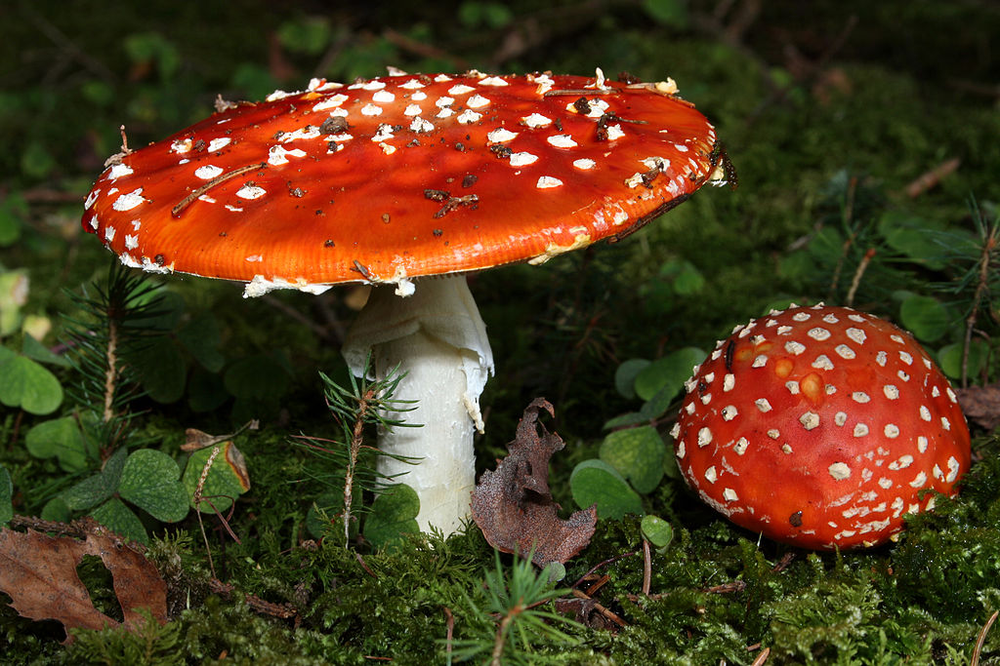

Informații generale
Cartea Roşie a Republicii Moldova cuprinde specii de organisme pe cale de dispariţie. Prima a fost publicată în 1978 şi cuprindea 26 de specii de plante şi 29 de specii de animale periclitate şi critic periclitate.
O nouă (a treia) ediție a Cărții Roșii a ieșit de sub tipar. În noua variantă a cărții sunt incluse 208 specii de plante și 219 specii de animale. În ediția dată au apărut 75 de specii de plante, care anterior nu se considerau rare, însă acum se află în pericol de dispariţie. De asemenea, actuala publicaţie are capitole noi, în care sunt incluse specii rare de alge şi ciuperci.
Menționăm că în prima ediție a cărții apărută în 1976 erau incluse aproximativ 50 specii de plante și animale rare, pe cale de dispariție. În cea de a doua ediție apărută în 2001 au fost incluse 126 de specii de plante şi 116 specii de animale.
Ediția a treia apărută în 2015 este una bilingvă, în română și engleză. Totodată, aceasta este bogată în ilustrații, care arată speciile de plante și animale rare. Editarea volumului a fost posibilă din sursele Fondului Ecologic.
Cartea Roșie a Republicii Moldova are scopul de a pune la dispoziția cercurilor ştiinţifice, factorilor decizionali de mediu, practicienilor şi a opiniei publice un document de bază pentru studierea profundă a biodiversităţii şi elaborarea acţiunilor în vederea restabilirii şi conservării ei. Portalul ecopresa.md menționează că problema protecţiei florei şi faunei Republicii Moldova este astăzi la scară naţională o chestiune de prim-ordin, întrucât există o tendinţă de reducere sau chiar de dispariţie a mai multor specii de plante şi animale, fapt care o arată și numărul în creștere a speciilor incluse în fiecare ediție a Cărții Roșii.
Totodată, Cartea Roșie urmăreşte nu numai să caracterizeze și să prezinte starea ecologică actuală a speciilor de animale si plante vulnerabile, periclitate şi critic periclitate, dar propune şi acţiunile strict necesare pentru conservarea, reproducerea si valorificarea raţională a acestora.
Istoric: O data la zece ani, începînd cu anul 2007, va fi editata Cartea Roșie. Decizia aparține Ministerului Ecologiei și Resurselor Naturale (8 mai 2007), care a format în acest sens o comisie naționala de experți în ecologie. În decizie se stipula că în următorii cinci ani, membrii comisiei vor examina situația speciilor de animale și plante rare, a celor aflate pe cale de dispariție și vor elabora proiectul celei de-a treia ediții a Cărții Roșii. În noua ediție vor fi descrise speciile de plante și animale care au reapărut pe teritoriul Republicii Moldova în ultimii ani.
Prima ediție a Cărții Roșii a fost editata in 1976 și include 50 specii de plante și animale rare, pe cale de dispariție. A doua ediție a apărut in 2001 și cuprinde 126 specii de plante si 116 specii de animale pe cale de dispariție de pe teritoriul R. Moldova.
 X
X
Fungi
| Denumirea în română | Denumirea în latină | Semnalare | Statut | Familia | Imagine |
|---|---|---|---|---|---|
| Amanită de muscă, muscariță | Amanita muscaria | Lângă s. Lupa-Recea, Străşeni |
VU |
Familia Amanitaceae |  |
| Amanită solitară | Amanita echinocephala sin. Amanita solitaria | Rezervaţia ştiinţifică Codru |
VU |
Familia Amanitaceae | |
| Hrib pucios | Boletus aereus | Lângă s. Codreanca, Străşeni |
VU |
Familia Boletaceae | |
| Filopor roz-galben | Phylloporus pelletieri (Phylloporus rhodoxanthus) | Rezervaţia ştiinţifică Codru |
VU |
Familia Boletaceae | |
| Măciulia piticilor, pilugele | Clavariadelphus pistillaris | Rezervaţia ştiinţifică Codru |
VU |
Familia Clavariaceae |
Angiosperme
| Denumirea în română | Denumirea în latină | Semnalare | Statut | Familia | Imagine |
|---|---|---|---|---|---|
| Arin negru | Alnus glutinosa | Neidentificat |
EN |
Familia Betulaceae | |
| Pana zburătorului | Lunaria annua | Neidentificat |
VU |
Familia Brassicaceae | |
| Iarba osului | Helianthemum canum | Neidentificat |
EN |
Familia Cistaceae | |
| Mutulică | Scopolia carniolica | Neidentificat |
CR |
Familia Solonaceae | |
| Ceapă bulgărească | Nectaroscordum bulgaricum | Neidentificat |
EN |
Familia Alliaceae |
Animale
| Denumirea în română | Denumirea în latină | Semnalare | Statut | Familia | Imagine |
|---|---|---|---|---|---|
| Călugăriţa | Mantis religiosa | Pe tot teritoriul ţării |
EN |
Familia Mantidae | |
| Calosoma mirositoate | Calosoma sycophanta | Pe tot teritoriul ţării |
CR |
Familia Carabidae | |
| Văduviţa | Leuciscus idus | În Nistru şi Prut |
VU |
Familia Cyprinidae | |
| Vipera de stepă | Vipera ursini | Zona de stepă cu pâlcuri de arbori şi arbuşti |
EN |
Viperidae |  |
| Striga | Tyto alba | Parcurile din Chişinău şi Tiraspol |
EN |
Familia Alliaceae |